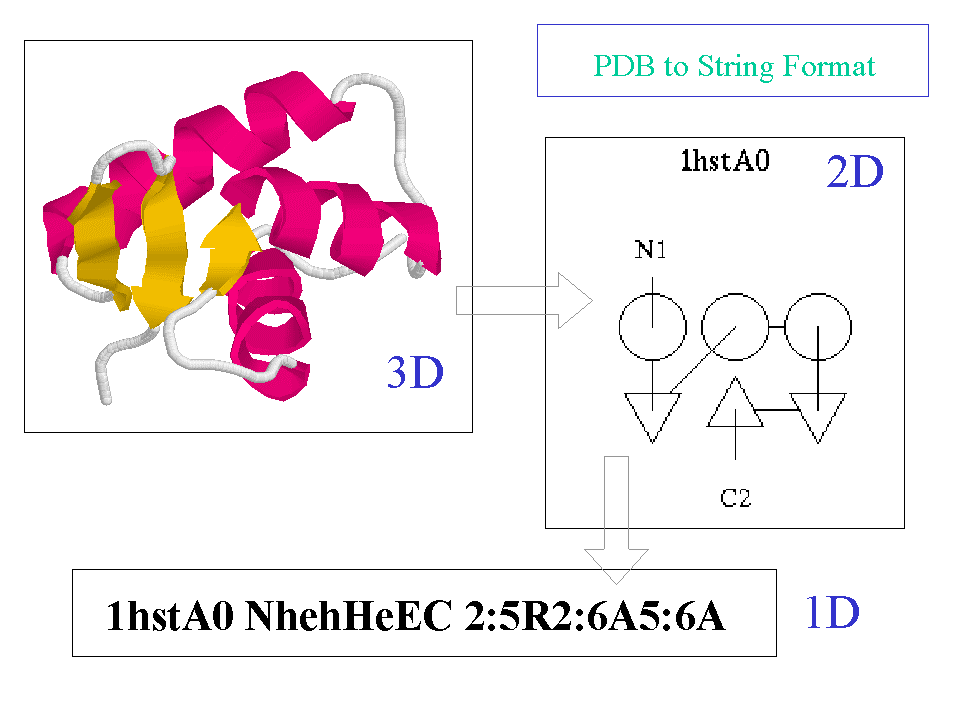
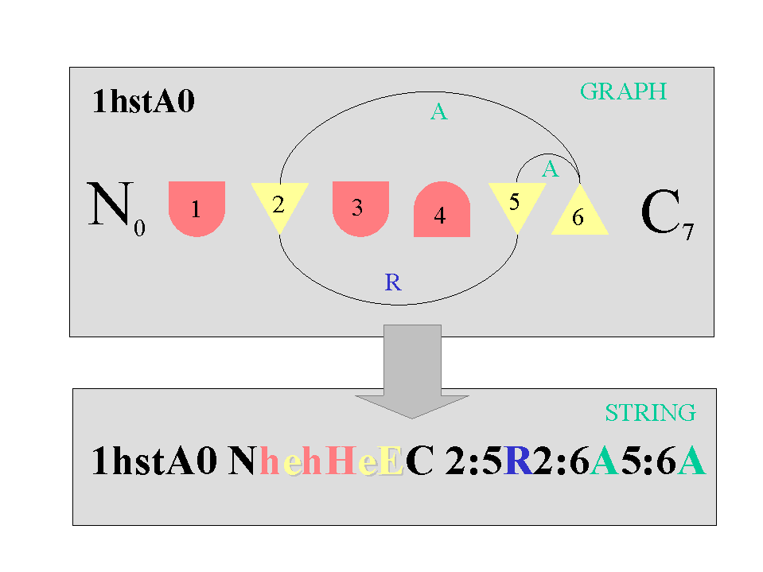

PDB files have been 'squashed' to make a 'cartoon' structure, which is a psuedo-2D representation. This has been further simplified to produce the 'linear' form - which preserves hydrogen bonds and chiralities, but not distances.
This linear format can conveniently be written as a string; although it is the programmer's convenience, rather than the users! 